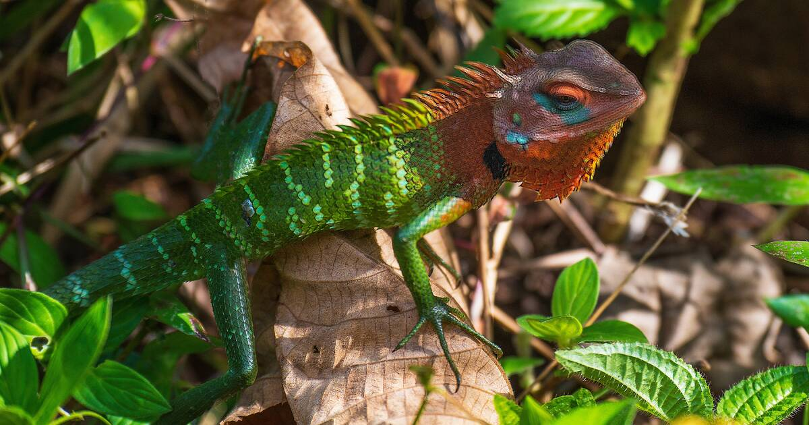
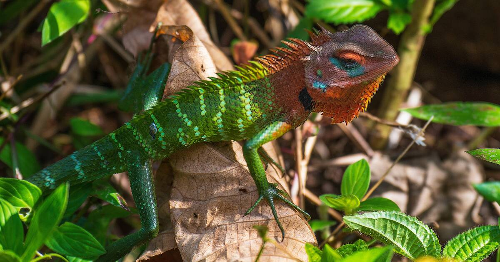

Location
Sri Lanka, an island nation nestled like a teardrop in the vast expanse of the Indian Ocean, boasts a strategic and picturesque location. Positioned off the southern tip of India, this tropical paradise is bestowed with an abundance of natural beauty. Its sectionerse landscapes range from palm-fringed golden beaches that caress the azure waters to mist-covered emerald mountains and verdant forests teeming with life. Sri Lanka's geographical placement influences its climate, fostering a rich biosectionersity.
 
